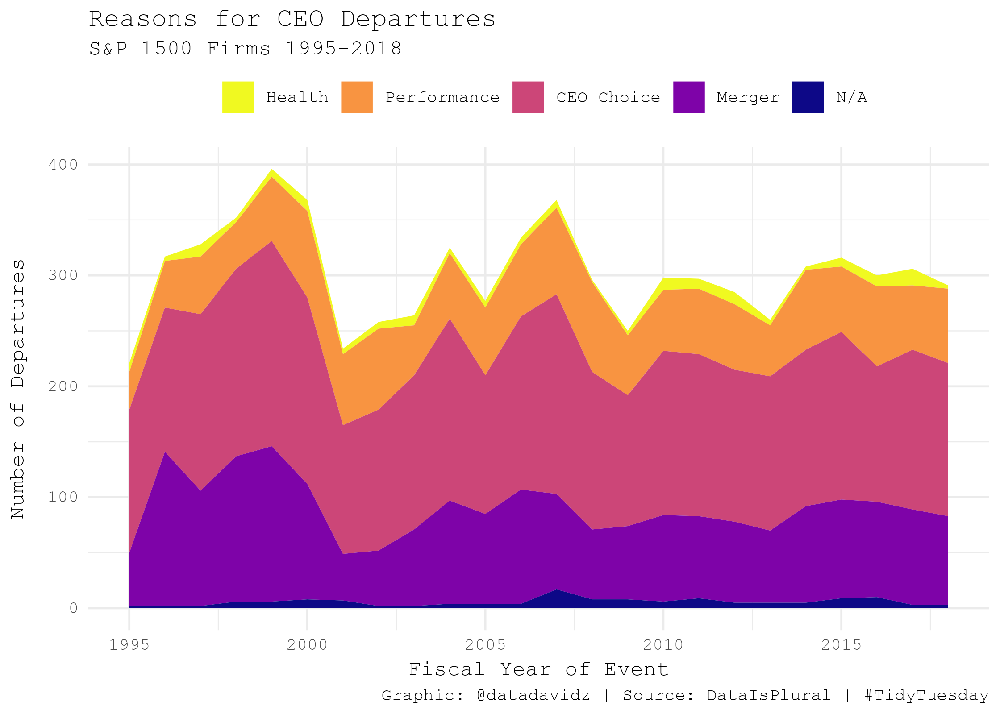

My data visualization based on a dataset of CEO departures from 1500 S&P firms from 2000-2018.
A quick analysis of the weekly #TidyTuesday dataset organized by the R4DS Online Learning Community. My approach is to apply my data science skills to explore one question I have about the data and generate a visualization that addresses this question. The main purpose for me is to practice and try out new things. I am never completely satisfied with the end result but I do the best I can in a short period of time.
What I learned this week about R and the Tidyverse
- Creating a stacked area chart using
geom_areafunction inggplot2 - Slight adjustments in placing the axis title using the
marginfunction in the plot theme
Brief explanation of the dataset
This dataset is from DataIsPlural and contains reasons for CEO departures from S&P 1500 firms. Information is provided about the company name, CEO name and date of departure along with notes and links to articles which were used to assign the departure reason. Reasons were assigned to one of 9 different codes. Codes 1-4 were involuntary reasons such as CEO died or was ill and CEO was terminated for poor job performance or legal issues. Codes 5-6 were voluntary reasons such as the CEO retired or decided to leave for a new opportunity. Code 7 is mostly about a change following a merger or acquisition and in some cases the CEO stayed on with the new company. Code 8-9 are missing or data collection error.
Load libraries and data
library(tidyverse)
library(scales)
library(viridisLite)
theme_set(theme_minimal(base_family = "mono"))
#Load dataset from TidyTuesday repository
departures <- readr::read_csv('https://raw.githubusercontent.com/rfordatascience/tidytuesday/master/data/2021/2021-04-27/departures.csv')Wrangle
Initial conclusions from exploring the CEO departures dataset.
- CEO departures ranged from 1987 to 2020 in the dataset however not much data before 1995 and data after 2018 was mostly incomplete.
- Top reasons for departures were CEO retired, Other (mostly M&A) and dismissed due to job performance.
NAin the departure code appears to be an entry where the CEO is still at the company upon last check.
The following plot shows the breakdown of departure codes vs. fiscal year for the entire dataset.
departures %>%
mutate(departure_code = as.factor(departure_code)) %>%
group_by(fyear, departure_code) %>%
summarize(n = n(), .groups = "drop") %>%
ggplot(aes(x = fyear, y = n, fill = departure_code)) +
geom_area() +
labs(title = "CEO Departures by Code",
x = "Fiscal Year",
y = "# of Departures")
As can be seen from this chart, the data after 2018 contains a great deal of NAs which appear to be just missing data. Also the data before 1995 is pretty lean. Another observation is that just a few codes tend to dominate the chart making the less frequent codes difficult to assess. Based on these observations, I decided to recode the data to capture 5 main categories for CEO departures: 1) Health, 2) Performance, 3) CEO choice, 4) Merger and 5) N/A (unknown).
The code for cleaning and wrangling the dataset prior to plotting is given below.
departures_clean <- departures %>%
filter(fyear < 2019 & fyear > 1994) %>%
filter(!is.na(departure_code)) %>%
mutate(departure_code = as.character(departure_code)) %>%
mutate(departure_code = fct_recode(departure_code, Health = "1",
Health = "2",
Performance = "3",
Performance = "4",
`CEO Choice` = "5",
`CEO Choice` = "6",
Merger = "7",
`N/A` = "8",
`N/A` = "9"
)) %>%
group_by(fyear, departure_code) %>%
summarize(n = n(), .groups = "drop")
departures_clean# A tibble: 120 × 3
fyear departure_code n
<dbl> <fct> <int>
1 1995 Health 8
2 1995 Performance 34
3 1995 CEO Choice 129
4 1995 Merger 48
5 1995 N/A 2
6 1996 Health 4
7 1996 Performance 42
8 1996 CEO Choice 130
9 1996 Merger 139
10 1996 N/A 2
# … with 110 more rowsVisualize
The visualization of the tidied and recoded dataset was then performed using a stacked area chart. This type of plot is standard in ggplot2 using geom_area.
p1 <- departures_clean %>%
ggplot(aes(x = fyear, y = n, fill = departure_code)) +
geom_area() +
scale_fill_viridis_d(option = "plasma", direction = -1) +
labs(title = "Reasons for CEO Departures",
subtitle = "S&P 1500 Firms 1995-2018",
x = "Fiscal Year of Event",
y = "Number of Departures",
fill = NULL,
caption = "Graphic: @datadavidz | Source: DataIsPlural | #TidyTuesday") +
theme(legend.position = "top",
axis.title.x = element_text(margin = margin(t = 5, r = 0, b = 0, l = 0)),
axis.title.y = element_text(margin = margin(t = 0, r = 10, b = 0, l = 0)))
The default margin for the axis title labels for theme_minimal is just too close to the axis labels for my liking. The best way to adjust the spacing of these labels is to use the margin function within the theme element_text for axis.title.x or axis.title.y. The ordering of the elements is a bit weird (top, right, bottom, left) but I guess it goes clockwise from the top. Probably best to assign the labels to avoid confusion. I was a bit lazy with the font choosing the default “mono” font but it seemed like a good fit for a business-related dataset.
Summary
The stacked area chart for the CEO departure dataset was effective in communicating the main reasons CEOs left their company over the 1995-2018 timeframe. The viridis magma color palette produced a pleasing visualization. The number of departures varied from year-to-year however the ratio among the reasons was fairly consistent.